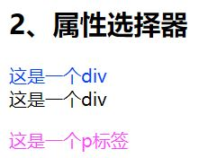
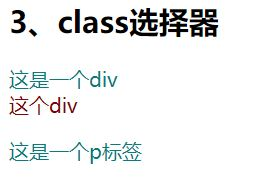
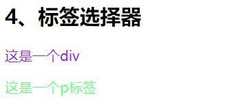
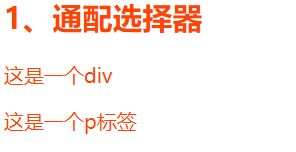
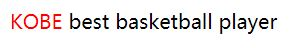

CSS选择器总结
时间：2020-3-6
摘要：本篇博客总结了CSS中的常见选择器以及如何使用CSS的权重去判断选择器的优先级
一、基本选择器
1.1、id选择器
1) 语法：#id { 属性名：属性值；}
2) 举例：
/*html部分*/ <h2>2、属性选择器</h2> <div id="idDiv">这是一个div</div> <div>这是一个div</div> <p id="idP">这是一个p标签</p> /*CSS部分*/ #idDiv{ color: #0044ff; } #idP{ color: #ff44ff; }
3) 效果：可以看到id选择器选择的两个标签都发生了对应的变化，而没有id的div元素保持原样。需要注意的是： html标签的id与css内容是一对一的关系，也就是说id是唯一的。
1.2、class选择器
1) 语法：.类名 { 属性名：属性值；}
2) 举例：
/*html部分*/ <h2>3、class选择器</h2> <div class="classDiv">这是一个div</div> <div class="classDiv">这个div</div> <p class="classP">这是一个p标签</p> /*CSS部分*/ .classDiv{ color: rgb(4,125,125); } .classP{ color: rgb(125,4,4); }
3) 效果：可以看到class选择器选择的两个类都发生了对应的变化。与id选择器不同，不同的html元素可以使用同一个类。比如示例中的div与p，它们属于同一类。
1.3、标签选择器
1) 语法：标签名 { 属性名：属性值；}
2) 举例：
/*html部分*/ <h2>4、标签选择器</h2> <div>这是一个div</div> <p>这是一个p标签</p> /*CSS部分*/ div{ color: #921fff; } p{ color: #68ff7e; }
3) 效果：可以看到标签选择器选择的两个标签都发生了对应的变化
1.4、通配符选择器
1) 语法：* { 属性名：属性值；}
2) 举例：
/*html部分*/ <h2>1、通配符选择器</h2> <div id="idDiv">这是一个div</div> <p id="idP">这是一个p标签</p> /*CSS部分*/ *{ color: #ff5500; }
3) 效果：所有的元素都会被选中改变成对应的效果。
二、其他衍生的选择器
2.1、伪选择器
2.1.1、伪类选择器
1) 语法：选择方式:伪类 { 属性名：属性值；} ps:这个选择方式指的是基本选择器的四种选择方式的写法：#、. 、标签名、*.CSS提供了五种基本伪类选择器，分别对应HTML标记的五种状态:
| 伪类选择器 | 作用 | 应用对象 |
|---|---|---|
| :hover | 定义标记在鼠标悬停(划过)时的样式 | 所有显示标记 |
| :link | 定义标记在超链接状态下的样式 | a标签 |
| :focus | 定义标记在获取焦点时的样式 | a标签(IE浏览器不支持) |
| :visited | 定义标记被访问过后的样式 | a标签 |
| :active | 定义标记在选定时刻下的样式 | a标签 |
2) 举例：
/*html部分*/ <a href="#" id="a1">链接</a> /*CSS部分*/ a:link {color:gray;}/*链接没有被访问时前景色为灰色*/ a:visited{color:yellow;}/*链接被访问过后前景色为黄色*/ a:hover{color:green;}/*鼠标悬浮在链接上时前景色为绿色*/ a:active{color:blue;}/*鼠标点中激活链接那一下前景色为蓝色*/
3) 效果：效果如代码注释内容
2.1.2、伪元素/对象选择器
1) 语法：选择方式:伪对象 { 属性名：属性值；} ps:这个选择方式指的是基本选择器的四种选择方式的写法：#、. 、标签名、*.CSS提供了四种基本伪对象选择器：
2) 举例:
| 伪类选择器 | 作用 | |
|---|---|---|
| :first-line | 定义文本的首行样式 | |
| :link | 定义标记在超链接状态下的样式 | a标签 |
| :before | 定义对象之前内容的样式 | |
| :after | 定义对象之后内容的样式 |
/*html部分*/ <p id="R.I.P">best basketball player</p> /*CSS部分 #RIP:before{ content: "KOBE "; color:red; }
3) 效果：
2.2、与html标签关系相关的选择器
| 后代选择器 | 作用 | 语法(E\F代表基本选择方式 | 例子 |
|---|---|---|---|
| 后代选择器 | 选择E元素的所有后代F元素 | E F { 属性名：属性值；} | div p { color: red; }其作用就是选择 div 元素的所有后代 p元素，并使其文本变红 |
| 直接选择器 | 选择E元素的所有子元素F | E>F { 属性名：属性值；} | iv>p { color: red; }其作用就是选择 div 元素的所有直接子元素P，并使其文本变红 |
| 相邻同胞选择器 | 选择紧接在E元素之后的第一个兄弟元素F | E+F { 属性名：属性值；} | div+p { color: red; }div>p { color: red; }其作用就是选择 div 元素后面与其同级的第一个P，并使其文本变红 |
| 同胞选择器 | 选择E元素之后的所有兄弟元素F | E~F { 属性名：属性值；} | div~p { color: red; }其作用就是选择 div 元素后面与其同级的所有P，并使其文本变红 |
2.3、并列选择器
1) 语法：EFG { 属性名：属性值；}。其中E、F、G分别为不同的基本选择方式。
2) 效果：就是加多个限定条件去找到想要选择的html标签。比如==div.demo{}==就是去选择div元素中属于demo类的div。
2.4、分组选择器
1) 语法：E，F，G { 属性名：属性值；} 。其中E、F、G分别为不同的基本选择方式。
2) 效果：就是同时选择多个html标签。比如==div em p{}==就是去同时选择div、em、p三类标签。
2.5、属性选择器
1) 语法：[属性名=" 属性值"] { 属性名：属性值；}。
2) 效果：就是去选择带有指定属性的标签。如：[href] { } 就是去选择所有带有href属性的标签。
三、CSS选择器权重
我们思考一下这种情况，假设有两个选择器同时选中了同一个html标签。那么，浏览器该按哪一个选择器的内容去渲染这个html标签呢？其实这一切都与css选择器的权重表有关。浏览器会按权重高的选择器渲染。
3.1、权重表
| 选择器 | 权重 |
|---|---|
| ！important | 正无穷 |
| 行间样式（也就是不用选择器，直接在html标签上写的css样式） | 1000 |
| id选择器 | 100 |
| class、属性、伪类选择器 | 10 |
| 标签、伪元素选择器 | 1 |
| 通配符选择器 | 0 |
注意：
1.！importanter：
比如一个类选择器为：
.classP{
color: rgb(125,4,4);
width：100px；
}
那么它的权重要比id选择器低。但是我们又想让这个类选择器中的color属性能够起作用，那么我们可以在其后面加：!important。
.classP{
color: rgb(125,4,4);!important;
width：100px；
}
2.这里的权重不是10进制，而是256进制。也就是说这里的权重1，其实代表着256。
3.2、如何应用权重判断选择器的优先级
举一个很简单的例子：
1) .demo p span {}
2) .classSpan {}
假设这两个选择器都指向span这个标签。那么上面那个选择器的权重为10+1+1=12，下面的为10。所以上面那个选择器的权重大于下面的。这也是实际浏览器渲染html时会使用上面那个选择器的内容去渲染span的原因。